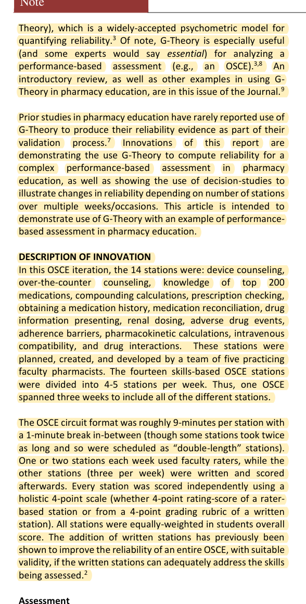
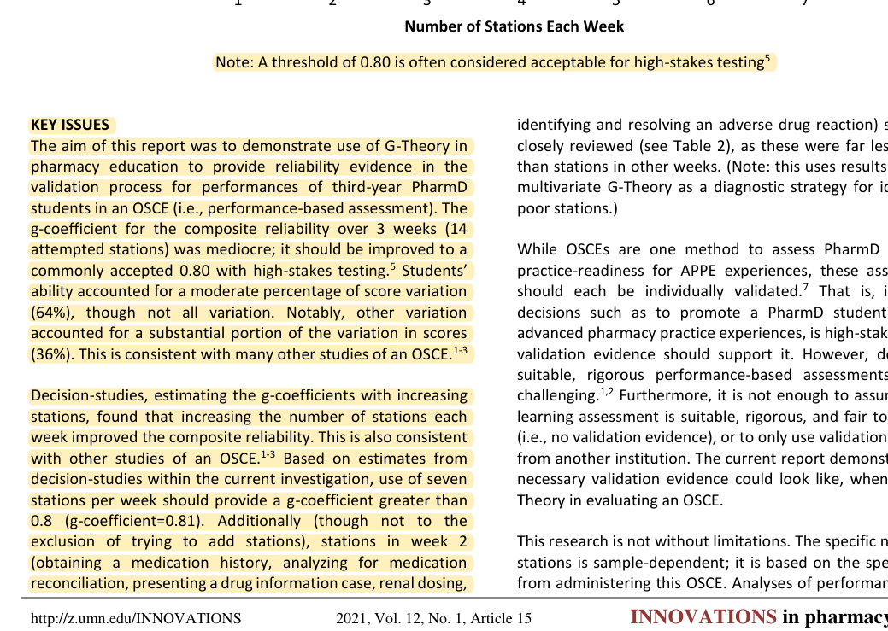
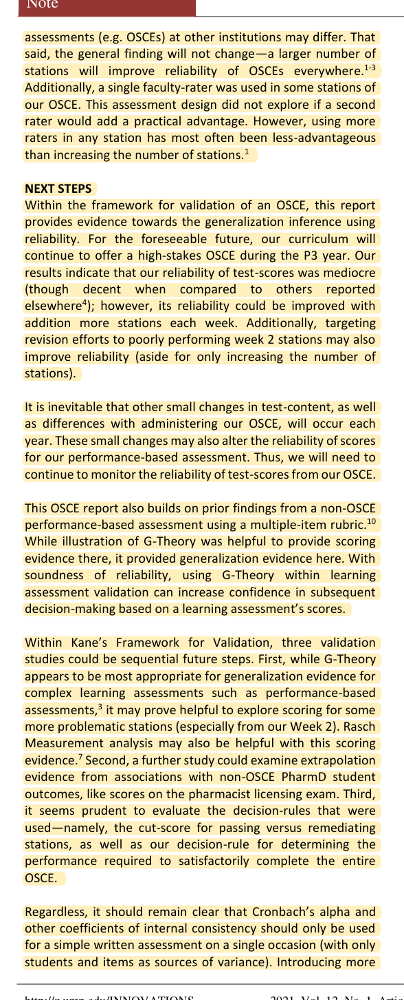

R19 · Evaluation and measurement
Four stations validate defined system tasks, not comprehensive pharmacy competence
Validation Evidence using Generalizability Theory for an Objective Structured Clinical Examination
Michael J. Peeters, M. Kenneth Cor, Sarah E. Petite, Michelle N. Schroeder · 2021
INNOVATIONS in pharmacy 12(1):15
What the study investigates
OSCE scores vary with learners, station difficulty, and examination arrangements. The study illustrates how generalizability theory separates these sources and estimates the effect of adding stations.
How it was studied
The pharmacy OSCE includes 14 skills stations distributed across three weeks. A G-study partitions variation, and a D-study estimates reliability under different station counts. Tasks include medication history, prescription review, counselling, and drug interactions.
Findings
In the study's data, additional stations improve estimated reliability, and a high generalizability coefficient requires more than a few stations. The authors caution that another institution may obtain different results.
Limits of the evidence
Its station-count findings do not prescribe changing our four cases into seven. DualGraph-OSCE evaluates system behavior in four defined tasks; it does not use their combined score to certify comprehensive learner competence.
How it informs DualGraph-OSCE
The four stations form the fixed task set for the current study, and outcomes should be reported for each. A cross-case generalization claim requires additional held-out cases within task categories. Rewriting or rerunning one case does not create another independent case. High-stakes use would require further estimation of station, assessor, and occasion variation.
Where to cite it
Evaluation: why four stations can support a bounded technical comparison. Discussion: generalization limits.
Possible manuscript wording
Pharmacy OSCE generalizability research shows that station sampling affects measurement reliability. Our system-effectiveness claim is therefore limited to the four evaluated stations rather than comprehensive pharmacy competence.
[R19·1]This is a manuscript-specific paraphrase, not a quotation from the source. The excerpts below define what the citation supports. The proposed method and its expected benefits are not findings of the cited paper.
Source passages and precise locations
Page numbers refer to physical pages in the saved original PDF, including any repository cover sheets. Compilation page numbers are listed separately. Yellow highlighting marks the passage used for the argument.
R19-E1Fourteen stations and examination arrangements
Original PDF page 2. Highlight compilation page 289. The highlight identifies the passage used here; consult the full original page for its context.

R19-E2Estimated effect of adding stations
Original PDF page 4. Highlight compilation page 291. The highlight identifies the passage used here; consult the full original page for its context.

R19-E3Limits on transferring the findings
Original PDF page 5. Highlight compilation page 292. The highlight identifies the passage used here; consult the full original page for its context.
